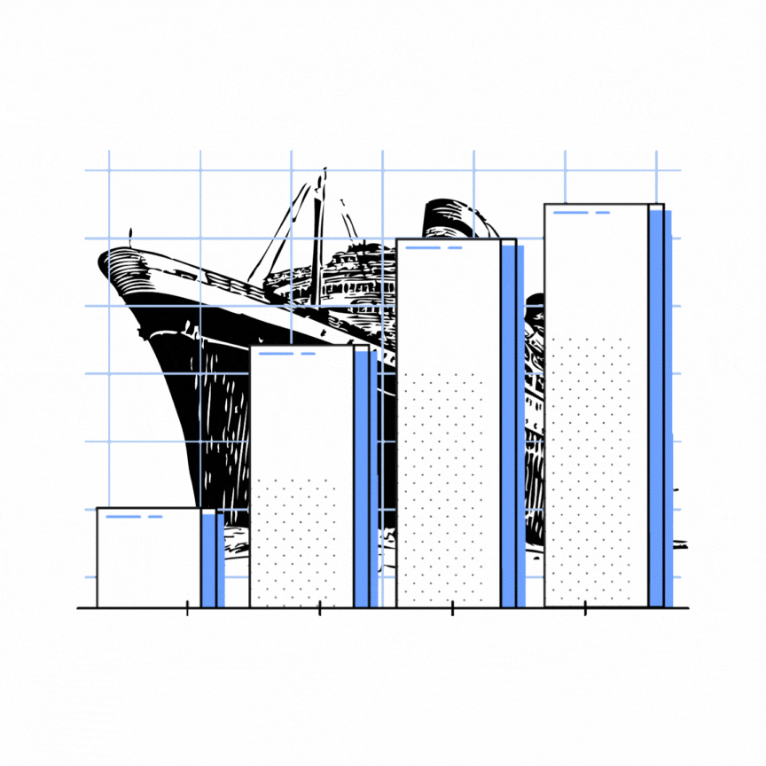

ML Projects
The Titanic
The Titanic data science project involves analyzing data on the passengers of the Titanic ship, which famously sank on its maiden voyage in 1912.
Project linkCustomer Cluster

By analyzing customer data, such as purchase history or survey responses, K-means clustering can identify groups of customers who have similar preferences for certain brands. This information can be valuable to marketing teams who can then tailor their messaging and campaigns to target specific customer groups more effectively.
Project linkVaccine Status

The vaccine status data science project involves analyzing data on individuals' vaccination status for a specific disease, such as COVID-19. The dataset includes information on various factors that may influence an individual's decision to get vaccinated
Project linkTerm Deposit

Term deposit is a deposit that a bank or a financial institution offers with a fixed rate (often better than just opening a deposit account) in which your money will be returned back at a specific maturity time.
Project linkVisualization Projects
TABLEAU - Sales Dashboard